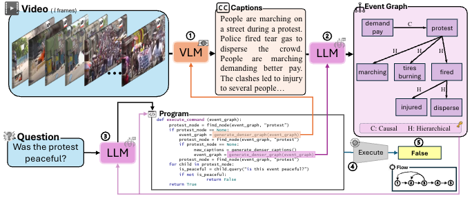

|
Ali Asgarov I'm a first-year Ph.D. student at the department of computer science at Virginia Tech , Blacksburg, VA, United States. I work in computer vision and natural language processing, with a focus on multimodal learning and vision-language models. Before joining Virginia Tech, I completed an M.Sc. in Computer Science at George Washington University. At Virginia Tech, I am working under the guidance of Dr. Chris Thomas on advancing video-language understanding with cross-modal reasoning. In the past, I have been fortunate to collaborate with Dr. Rebecca Hwa at George Washington University and Dr. Samir Rustamov on cross-modal information retrieval across image, text, video, and audio. I am associated with the Sanghani Center for Artificial Intelligence and Data Analytics. |
{kind=link}
|
Research My research interests include:
|
|
News |
|
Oct. '24 |
Our paper ENTER was accepted as a spotlight paper at the Multimodal Reasoning Workshop, NeurIPS 2024. |
|
Aug. '24 |
Started Ph.D. program in Computer Science at Virginia Tech. |
|
Jul. '24 |
One paper is under review for Coling2025. |
|
Apr. '24 |
Received Ph.D. offer from Virginia Tech in Computer Science. |
|
Dec. '23 |
Graduated from George Washington University with a Master's degree in Computer Science. |
|
Publications |
|  |
Hammad Ayyubi, Junzhang Liu, Zhecan James Wang, Hani Alomari, Chia-Wei Tang, Ali Asgarov , Md. Atabuzzaman, Najibul Haque Sarker, Zaber Ibn Abdul Hakim, Shih-Fu Chang, Chris Thomas We introduce ENTER, an interpretable system for video question answering that uses event-graph representations to integrate visual data with transparent, structured reasoning, achieving high performance and enhanced explainability on complex, long-range questions. This paper was accepted and selected as a spotlight paper at the Multimodal Algorithmic Reasoning Workshop, NeurIPS 2024 |
Please see my Google Scholar page for an up-to-date list.
|
Education |

|
Virginia Tech
08.2024 - Present PhD in Computer Science GPA: 4.0 / 4.0 Advisor: Dr. Chris Thomas |
|
George Washington University
08.2022 - 12.2023 MSc. in Computer Science GPA: 3.76 / 4.00 Advisors: Dr. Rebecca Hwa & Dr. Samir Rustamov |
|
Honors & Awards
|
|
Teaching
|
|
The source for this website is from here. |
|
|